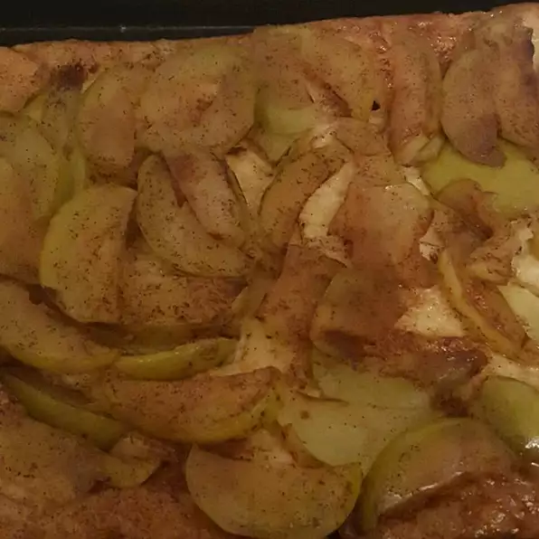

Tarte Tatin

Description
This one if one of my favourite dessert
And it's French !
Ingredients
- 1 recipe pastry for a 9 inch single crust pie
- ½ cup butter, softened
- ½ cup white sugar
- 3 apples - peeled, cored, and thinly sliced
Steps
- Preheat oven to 350 degrees F (175 degrees C). Line the outside of a 9 inch springform pan with foil to catch drips.
- Spread butter evenly into a 9 inch springform pan. Sprinkle with sugar. Arrange apple slices into an overlapping pattern over sugar layer. Cover apples with pastry, trimming sides if necessary. Place pan on a baking sheet.
- Bake in preheated oven for 1 hour, until pastry is golden brown. Allow to cool slightly, then release sides of pan. Place a large plate over pastry, then invert so apple layer is on top. Remove bottom of pan and serve.
Return to main page